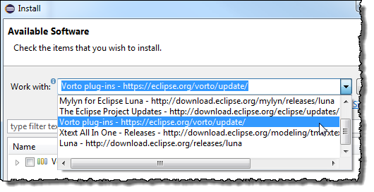
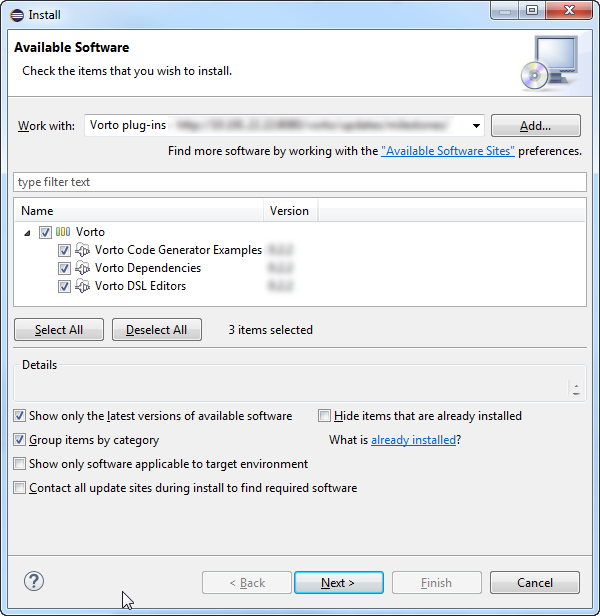
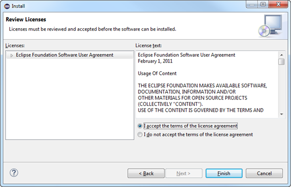
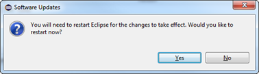

Installing the Plug-ins
This section details the following topics:
Getting the Vorto Plug-ins
The Vorto plug-ins are available on the Eclipse update site server. The URL to the server is http://download.eclipse.org/vorto/update/milestones. You must add this repository to your IDE or, alternatively, import the Vorto plug-in zip archive to get the Vorto plug-ins.
Proceed as follows
- Start your IDE (Eclipse Luna or later).
- In the main menu, click Help > Install new Software….
The Install dialog opens displaying the Available Software. - Click the selection button of the Work with selection list field to check if the Vorto plug-ins repository is already present.

If the Vorto plug-ins repository URL is displayed in the expanding list, you can end the procedure here.
Otherwise proceed with the next step. - Add the Vorto plug-ins repository URL:
a. Click the Add… button beside the Work with field. The Add Repository dialog opens.
b. Enter a Name (optionally, e.g., Vorto).
c. Enter the Vorto plug-ins repository URL http://download.eclipse.org/vorto/update/milestones into the Location field.
d. Click OK.
In the Install dialog, the available software list is updated and now contains the software found in the added repository and in the installed archive, respectively.
| The update of the available software list may take a while. |
Installing the Vorto Plug-ins
Prerequisites
- You have started your IDE.
- You have added the Vorto plug-ins repository to your IDE (refer to Getting the Vorto Plug-ins).
Proceed as follows
- If not yet done click Help > Install new Software… in the main menu.
The Install dialog opens displaying the Available Software. - In the Work with selection list, select the entry with the Vorto plug-ins URL.
The Available Software list is updated. - In the Available Software list, select Vorto.
All containing software parts (features) are checked.
 - Click Next to verify the installation of Vorto plug-ins and its dependencies.
The Install dialog now displays the Install Details.

- Click Next.
The Install dialog now displays the Review Licenses.
 - Select I accept the terms of the license agreements and click Finish.
The software is being installed. - If the Security Warning dialog opens click OK.
After the installation is complete the Software Updates dialog opens.
 -
Click Yes to restart the your IDE.
After the restart the IDE contains the Vorto project group with several new project wizard items (File > New > Project…).
| In case the installation is unsuccessful, uninstall the previous version of the Vorto and install it again. |
Upgrading the Vorto Plug-ins
This section lists the steps required to upgrade the Vorto plug-ins.
Prerequisites
- You have a working installation of the previous version of the Vorto plug-ins.
- This assumes that your IDE version is in the Vorto supported versions, and stable releases of Xtext and M2E have been installed (for more information refer to System Requirements).
- You have started your IDE.
Proceed as follows
- Click Help > Install new Software… in the main menu.
The Install dialog opens displaying the Available Software. - In the Work with selection list, select the entry with the Vorto plug-ins URL.
The Available Software list is updated. - In the Available Software list, select
Vorto.
All containing software parts (features) are checked. - Click Next to verify the installation of Vorto plug-ins and its dependencies.
The Install dialog now displays the Install Details. - If the plug-ins are up-to date the Finish button remains inactive. End here by clicking Cancel.
- Otherwise, click Next.
The Install dialog now displays the Review Licenses. - Select I accept the terms of the license agreements and click Finish.
The software is being installed. - If the Security Warning dialog opens click OK.
After the installation is complete the Software Updates dialog opens. - Click Yes to restart the your IDE.